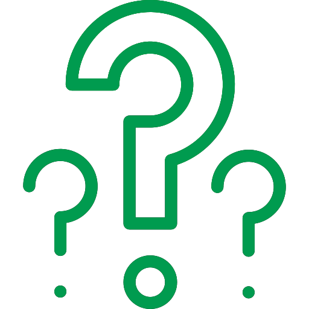
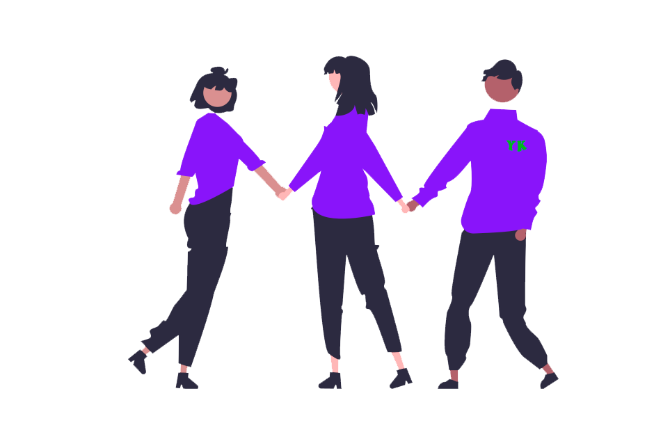
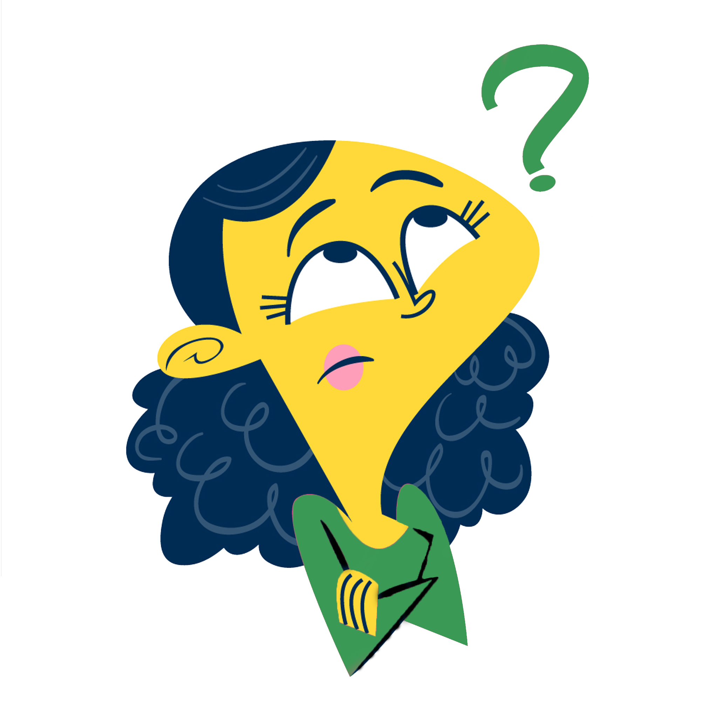
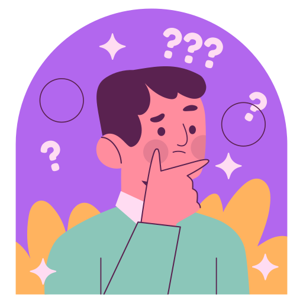
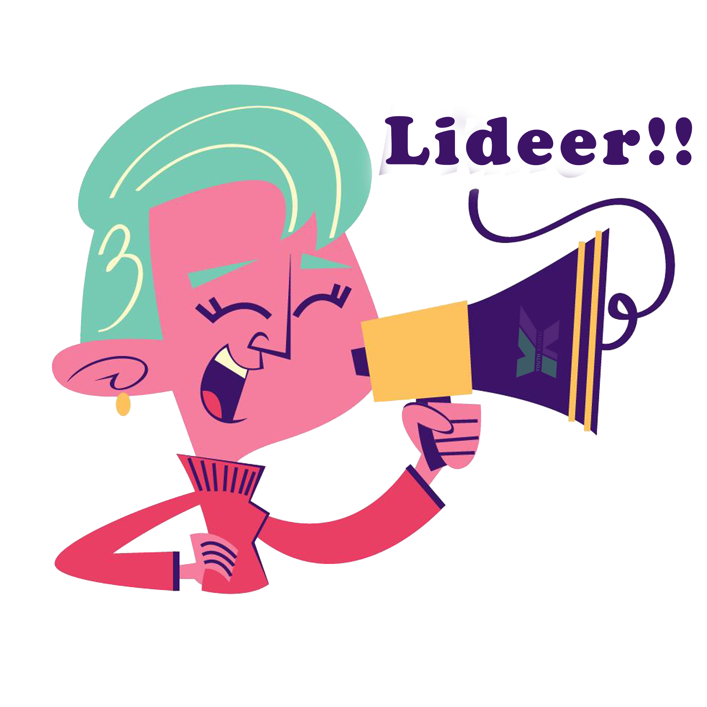
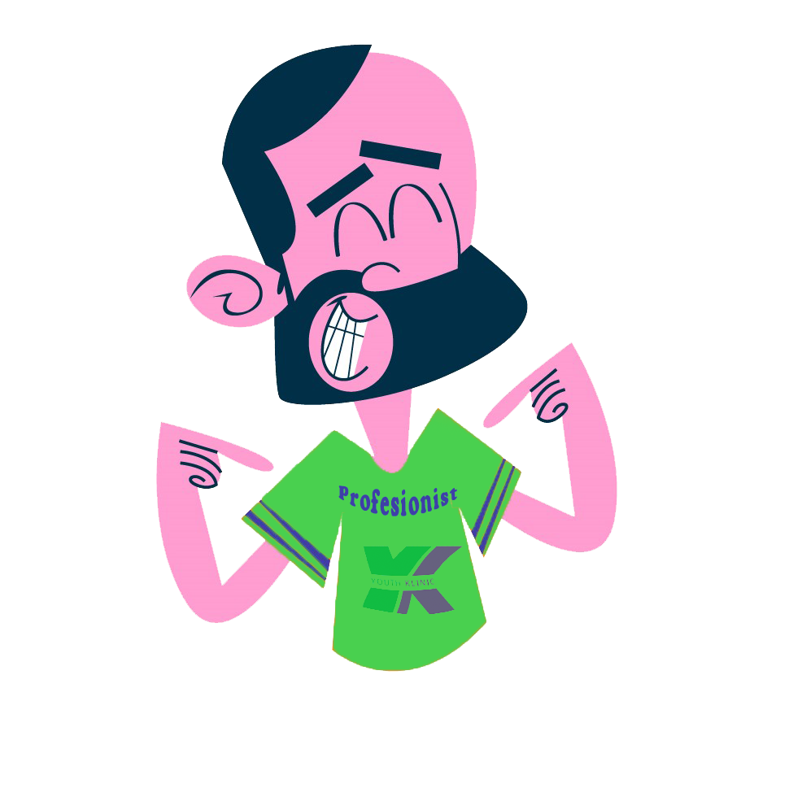

Voluntariatul este activitatea desfăşurată din proprie iniţiativă,
de orice persoana fizică, în folosul altora, fără a primi o
contraprestație materială.
Munca de voluntariat înseamnă dorința de a ajuta, de a face
ceva pentru societate, de a sprijini comunitatea în problemele
cu care se confruntă.
Orice muncă prestată fără constrângere de o persoana cu
intenţia de a ajuta şi fără a urmări un câştig financiar imediat.

CINE SUNT VOLUNTARII YOUTH KLINIC?
Voluntarii YK sunt adolescenții și tinerii
care își doresc să afle mai multe despre
sănatatea și dezvoltare lor, să își facă
prieteni, să promoveze serviciile YK, să
se implice în toate activitățile centrului.
Astfel zis, voluntarii realizează activități
de sensibilizare și profilaxie bazate pe
cele 7 probleme prioritare prin
abordarea de la egal la egal a
semenilor.

CE MOTIVEAZĂ TINERII
SĂ FACĂ VOLUNTARIAT?
În topul celor mai frecvente motive din
care tinerii aleg să facă voluntariat la YK se
regăsesc următoarele:
- au posibilitatea să-și facă prieteni noi;
- se implică în diverse activități;
- pot dobândi noi abilități și aptitudini;
- își dezvoltă încrederea în sine;
- se pregătesc pentru o viitoare profesie;
- își doresc să schimbe ceva în comunitate, etc.


Voluntar începător
Acest tip de voluntar trebuie să
parcurgă trainingul de bază care
include următoarele teme:
Servicii de Sănătate Prietenoase
Tinerilor, Voluntariatul în Youth
Klinic, Adolescența - schimbări
și transformări, Comunicarea.
Youth Klinic asigură dreptul
tinerilor la Confidențialitate și
Intimitate, 8 superputeri ale
adolescenței mele.
×
În urma instruirii voluntarul începător va fi capabil să:
- descrie particularitățile principale ale dezvoltării adolescenților;
- listeze mesajele cheie ale rețelei YK pentru promovarea sănătății adolescenților (8 superputeri ale adolescenței mele);
- înțeleagă importanța comunicării prietenoase/asertive cu beneficiarii;
- conștientizeze rolul confidențialității în cadrul YK și să păstreze confidențialitatea în conformitate cu
Standardele de Calitate ale Serviciilor de Sănătate Prietenoase Tinerilor;
- comunice și să informeze clar vizitatorii despre serviciile acordate de YK;
- ghideze și să conducă tinerii la recepție sau la specialistul corespunzător;
- organizeze și distribuie/afișeze informații în spațiile destinate acestora;
- asiste la organizarea activităților;
- realizeze fotografii și video pentru postări și alte tipuri de content;
- participe și la alte activități desfășurate în cadrul YK, în funcție de domeniile și interesele profesionale,
promovând Serviciile de Sănătate Prietenoase Tinerilor pentru adolescenți și tineri etc.
Voluntar educator
de la = la =
Acest p de voluntar
trebuie să parcurgă
trainingul de bază,
trainingul avansat ce
cuprinde cele 7 probleme
prioritare de sănătate și de
dezvoltare ale nerilor +
trainingul Peer to Peer.
×
În urma instruirii voluntarul începător va fi capabil să:
- descrie par cularitățile principale ale dezvoltării adolescenților;
- listeze mesajele cheie ale rețelei YK pentru promovarea sănătății adolescenților (8 superputeri ale adolescenței mele);
- înțeleagă importanța comunicării prietenoase/aser ve cu beneficiarii;
- conș en zeze rolul confidențialității în cadrul YK și să păstreze confidențialitatea în conformitate cu
Standardele de Calitate ale Serviciilor de Sănătate Prietenoase Tinerilor;
- comunice și să informeze clar vizitatorii despre serviciile acordate de YK;
- ghideze și să conducă nerii la recepție sau la specialistul corespunzător;
- organizeze și distribuie/afișeze informații în spațiile des nate acestora;
- asiste la organizarea ac vităților;
- realizeze fotografii și video pentru postări și alte puri de content;
- par cipe și la alte ac vități desfășurate în cadrul YK, în funcție de domeniile și interesele profesionale,
promovând Serviciile de Sănătate Prietenoase Tinerilor pentru adolescenți și neri etc

Voluntar lider
Voluntarul care a parcurs toate
instruirile (trainingul de bază,
trainingul avansat ce cuprinde cele
7 probleme prioritare de sănătate și
dezvoltare ale nerilor + trainingul
Peer to Peer), a fost implicat în
organizarea ac vităților specifice
pentru YK și manifestă calități de
lider poate fi numit un voluntar
lider.
×
În urma instruirii voluntarul începător va fi capabil să:
- descrie par cularitățile principale ale dezvoltării adolescenților;
- listeze mesajele cheie ale rețelei YK pentru promovarea sănătății adolescenților (8 superputeri ale adolescenței mele);
- înțeleagă importanța comunicării prietenoase/aser ve cu beneficiarii;
- conș en zeze rolul confidențialității în cadrul YK și să păstreze confidențialitatea în conformitate cu
Standardele de Calitate ale Serviciilor de Sănătate Prietenoase Tinerilor;
- comunice și să informeze clar vizitatorii despre serviciile acordate de YK;
- ghideze și să conducă nerii la recepție sau la specialistul corespunzător;
- organizeze și distribuie/afișeze informații în spațiile des nate acestora;
- asiste la organizarea ac vităților;
- realizeze fotografii și video pentru postări și alte puri de content;
- par cipe și la alte ac vități desfășurate în cadrul YK, în funcție de domeniile și interesele profesionale,
promovând Serviciile de Sănătate Prietenoase Tinerilor pentru adolescenți și neri etc

Voluntar profisionist
Voluntarul profesional este voluntarul
care a a ns un nivel semnifica v de
experienţă şi cunoș nțe în domeniul
sănătății. Acesta poate fi rezultatul
par cipării în toate modulele instruirii
sau studierii în cadrul programului
universitar. Voluntarul profesionist poate
f
i student sau un specialist în sănătate
care investeşte cunoş nţele şi mpul
propriu în ac vități de voluntariat,
aducându-și contribuția în cadrul YK.
×
În urma instruirii voluntarul începător va fi capabil să:
- descrie par cularitățile principale ale dezvoltării adolescenților;
- listeze mesajele cheie ale rețelei YK pentru promovarea sănătății adolescenților (8 superputeri ale adolescenței mele);
- înțeleagă importanța comunicării prietenoase/aser ve cu beneficiarii;
- conș en zeze rolul confidențialității în cadrul YK și să păstreze confidențialitatea în conformitate cu
Standardele de Calitate ale Serviciilor de Sănătate Prietenoase Tinerilor;
- comunice și să informeze clar vizitatorii despre serviciile acordate de YK;
- ghideze și să conducă nerii la recepție sau la specialistul corespunzător;
- organizeze și distribuie/afișeze informații în spațiile des nate acestora;
- asiste la organizarea ac vităților;
- realizeze fotografii și video pentru postări și alte puri de content;
- par cipe și la alte ac vități desfășurate în cadrul YK, în funcție de domeniile și interesele profesionale,
promovând Serviciile de Sănătate Prietenoase Tinerilor pentru adolescenți și neri etc